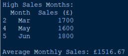
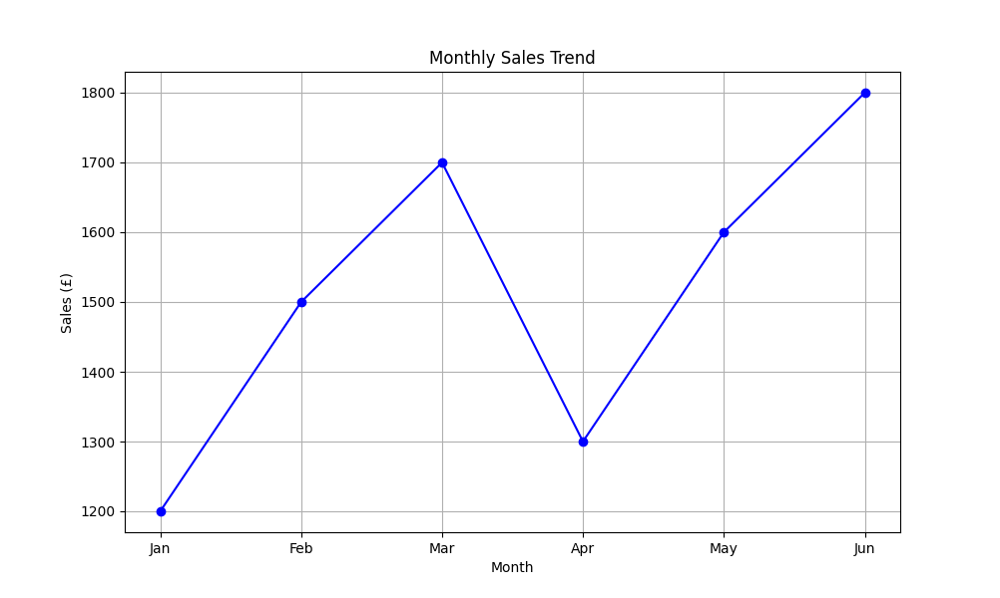
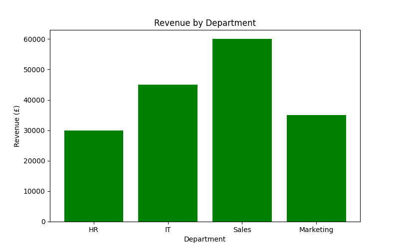
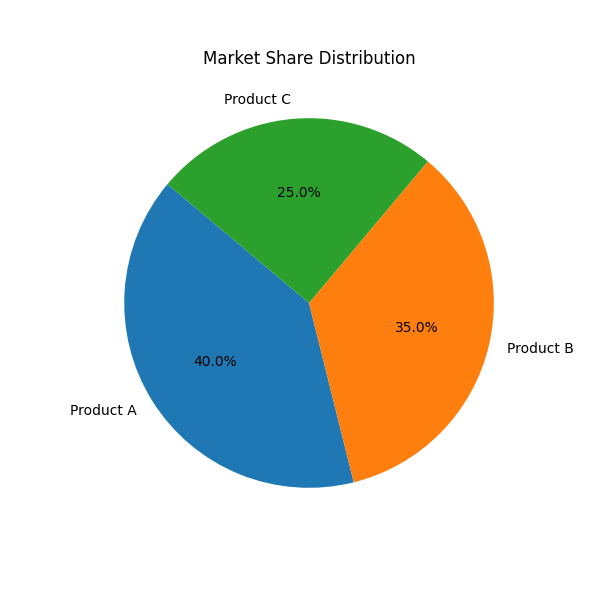
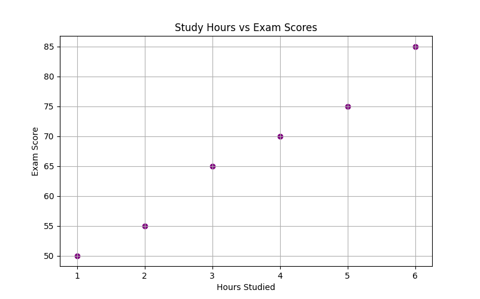
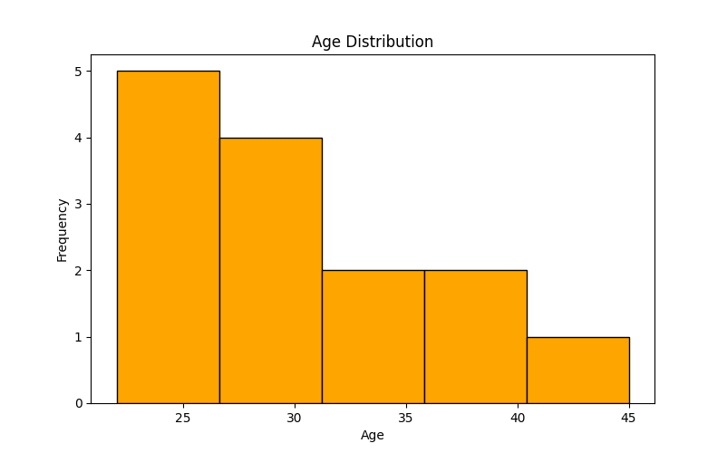

ESP - Task 4a: Developing A Solution
What Is Task 4a?
Task 4a is all about coding.
You will be given:
- A brief
- A CSV file containing data relevant to the brief
- A partially completed code
Your goal is to complete the code so that it meets the requirements of the brief, using Python and relevant libraries.
CSV Files
We talk more about CSV files in Task 3 but here is an example of an ESP Task 4a CSV File:

Differences:
- May contain more columns or different data types compared to Task 3
- Likely to include time-based or numerical data for analysis
- Structure may be tailored to the requirements of the brief
Pandas
Pandas is a powerful Python library for data manipulation and analysis.
It is commonly used to read, process, and analyse CSV files.
How Pandas efficiently handles data:
- Reading CSV Files: Load external data into a DataFrame (a table-like structure)
Example:pd.read_csv('sales_data.csv') - Data Selection & Filtering: Extract specific rows, columns, or conditions
Example:df[df['Sales (£)'] > 1500] - Data Aggregation: Calculate totals, averages, counts, etc.
Example:df['Sales (£)'].mean() - Sorting & Grouping: Organize data by values or categories
Example:df.sort_values(by='Sales (£)', ascending=False)
Why It’s Useful
Pandas lets you:- Quickly explore and understand your dataset
- Automate repetitive tasks like filtering and summarizing
- Prepare data for visualization with Matplotlib or other tools
It’s especially useful when working with multiple sheets or datasets, like comparing sales across departments or analszing age distributions.
Essential Pandas Commands
Read Data
pd.read_csv('filename.csv')Loads data from a CSV file into a DataFrame for analysis.
Create a DataFrame
pd.DataFrame({
'Month': ['Jan', 'Feb', 'Mar'],
'Sales (£)': [1200, 1500, 1700]
})
Creates a table-like structure with labeled columns and rows.
Filter Rows
df[df['Sales (£)'] > 1500]Returns rows where the sales are greater than £1500.
Summary Statistics
df['Sales (£)'].mean()Calculates the average of the Sales column.
Sort Data
df.sort_values(by='Sales (£)', ascending=False)Sorts the DataFrame by sales in descending order.
Convert to Date
pd.to_datetime(df['Date'])Converts a column of strings into datetime objects for time-based analysis.
Display First Rows
df.head()Shows the first five rows of the DataFrame.
Column Selection
df['Sales (£)']Selects a single column from the DataFrame.
Drop Columns
df.drop('ColumnName', axis=1)Removes a column from the DataFrame.
Example:
Code:
import pandas as pd
# Monthly Sales
monthly_sales = pd.DataFrame({
'Month': ['Jan', 'Feb', 'Mar', 'Apr', 'May', 'Jun'],
'Sales (£)': [1200, 1500, 1700, 1300, 1600, 1800]
})
# Filter months with sales over £1500
high_sales = monthly_sales[monthly_sales['Sales (£)'] > 1500]
# Calculate average sales
average_sales = monthly_sales['Sales (£)'].mean()
print("High Sales Months:")
print(high_sales)
print(f"\nAverage Monthly Sales: £{average_sales:.2f}")

MatPlotLib
MatPlotLib is a Python library used for creating static, animated, and interactive visualizations.
You may use it to plot graphs and visualise data from the CSV file.
Matplotlib helps you visualise that data, turning raw numbers into meaningful insights.
Key Matplotlib Features for Task 4a
Essential Matplotlib Commands
Core Setup
import matplotlib.pyplot as pltThis is the standard import statement. Most people alias it as plt for convenience.
Line Plot
plt.plot(x, y)Draws a simple line graph. You can customize it with markers, colors, and line styles.
Bar Chart
plt.bar(categories, values)Creates vertical bars to compare quantities across categories.
Horizontal Bar Chart
plt.barh(categories, values)Same as above, but horizontal.
Pie Chart
plt.pie(values, labels=labels, autopct='%1.1f%%')Displays proportions as slices of a circle. autopct shows percentages.
Scatter Plot
plt.scatter(x, y)Plots individual data points—great for showing relationships or distributions.
Histogram
plt.hist(data, bins=10)Shows the frequency distribution of a dataset. bins controls the number of intervals.
Titles and Labels
plt.title('Your Title')
plt.xlabel('X-axis Label')
plt.ylabel('Y-axis Label')
Adds context to your graph so viewers know what they’re looking at.
Grid and Legend
plt.grid(True)
plt.legend()
Adds a grid for readability and a legend for identifying data series.
Show the Plot
plt.show()Displays the graph in a window. Always include this at the end of your plotting code.
Graphs in MatPlotLib:
- Line Graphs: Ideal for showing trends over time (e.g., monthly sales, temperature changes)
Example:
plt.figure(figsize=(10, 6)) plt.plot(months, sales, marker='o', linestyle='-', color='blue') plt.title('Monthly Sales Trend') plt.xlabel('Month') plt.ylabel('Sales (£)') plt.grid(True) plt.show() - Bar Charts: Great for comparing categories (e.g., revenue by department)
Example:
plt.figure(figsize=(8, 5)) plt.bar(departments, revenue, color='green') plt.title('Revenue by Department') plt.xlabel('Department') plt.ylabel('Revenue (£)') plt.show() - Pie Charts: Useful for showing proportions (e.g., market share)
Example:
plt.figure(figsize=(6, 6)) plt.pie(market_share_values, labels=market_share_labels, autopct='%1.1f%%', startangle=140) plt.title('Market Share Distribution') plt.show() - Scatter Plots: Good for identifying correlations (e.g., hours studied vs. exam scores)
Example:
plt.figure(figsize=(8, 5)) plt.scatter(study_hours, exam_scores, color='purple') plt.title('Study Hours vs Exam Scores') plt.xlabel('Hours Studied') plt.ylabel('Exam Score') plt.grid(True) plt.show() - Histograms: Helps show distribution of data (e.g., age ranges, income brackets)
Example:
plt.figure(figsize=(8, 5)) plt.hist(ages, bins=5, color='orange', edgecolor='black') plt.title('Age Distribution') plt.xlabel('Age') plt.ylabel('Frequency') plt.show()
Marks
Task 4a is worth 34 marks.
The marks are split into 6 parts:
- Functionality - 6 marks
- Logic and programming structures - 3 marks
- Robustness - 3 marks
- Security - 6 marks
- Code organisation - 8 marks
- User experience - 8 marks
Time
You will have 4 Hours to complete this task.
Tips
- Practise using Python libraries such as Pandas and MatPlotLib before the exam.
- Read the brief carefully and understand the requirements before starting.
- Test your code thoroughly to ensure it meets all requirements.
- Comment your code to explain your logic and decisions.
- Use the CSV file effectively to analyze and present data as required.